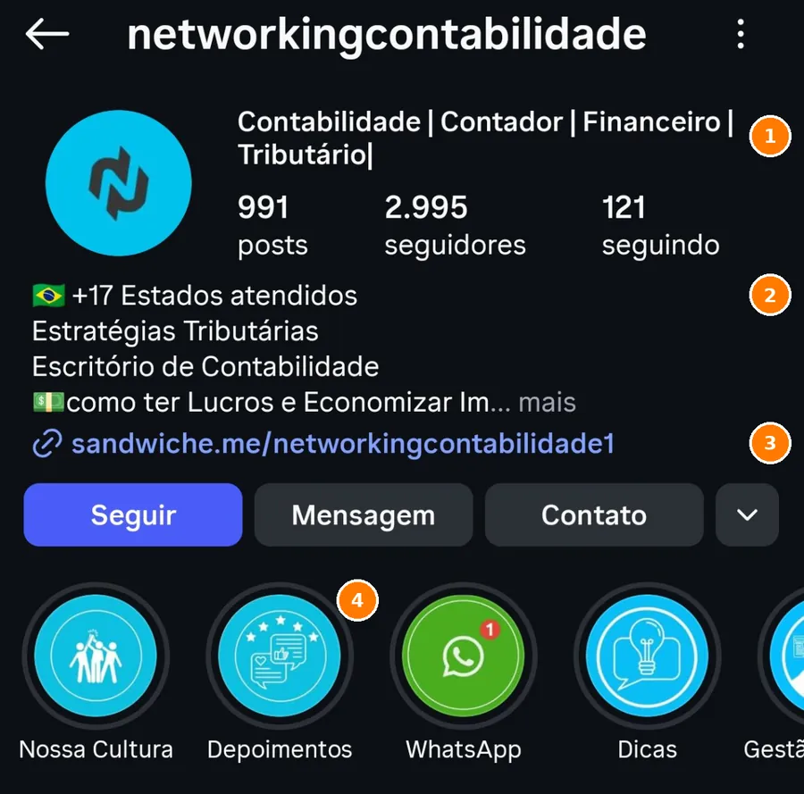
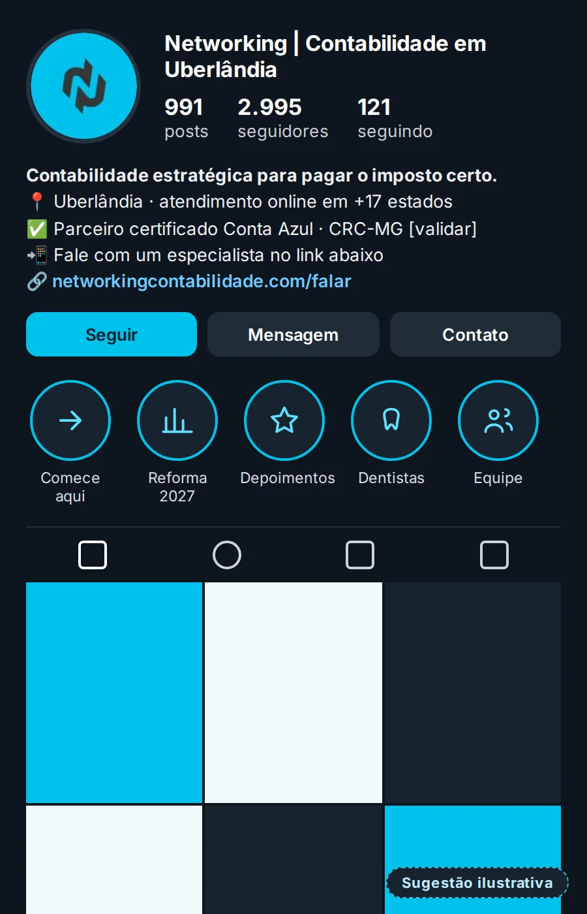
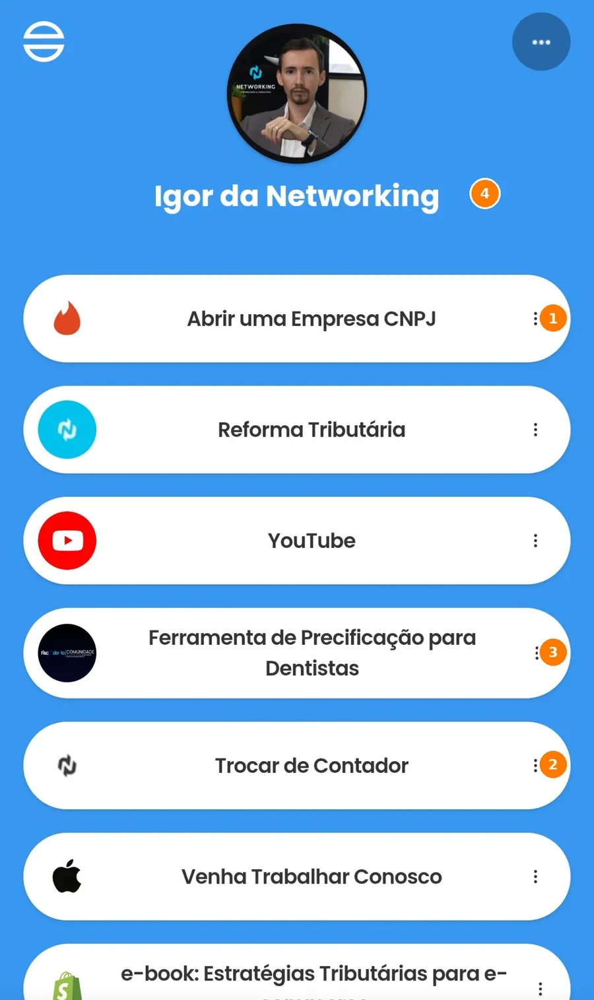
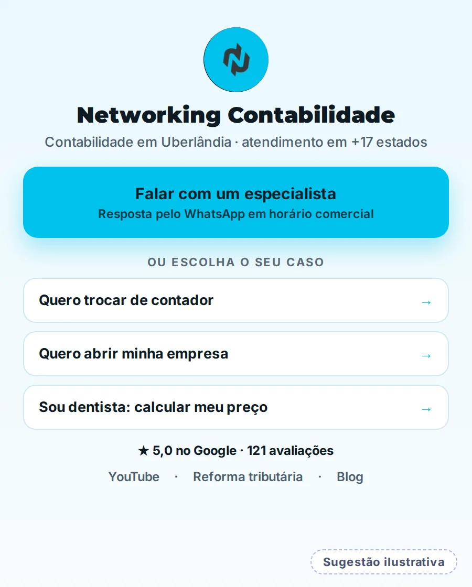
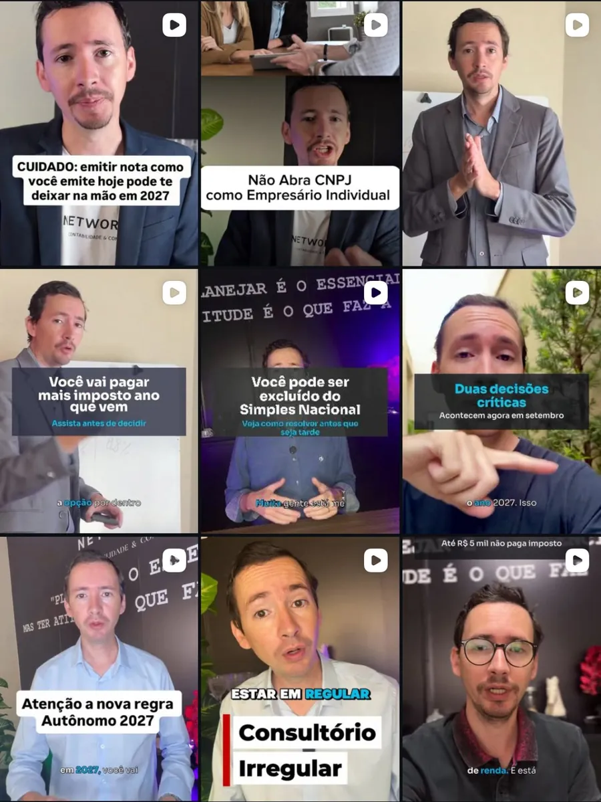
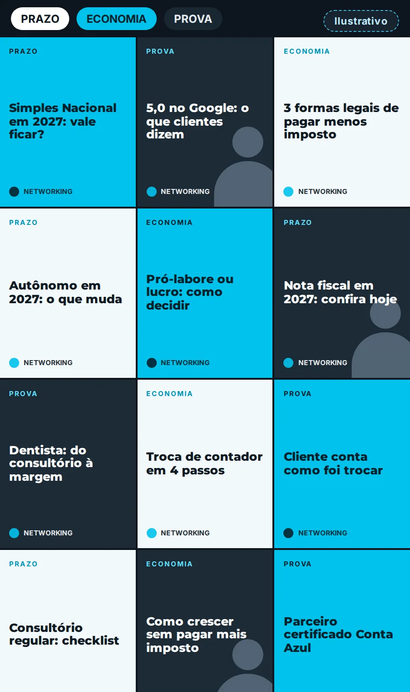
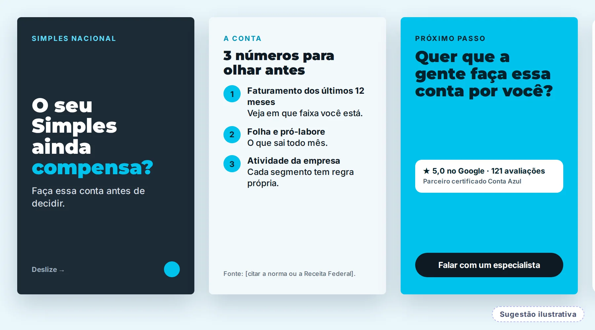
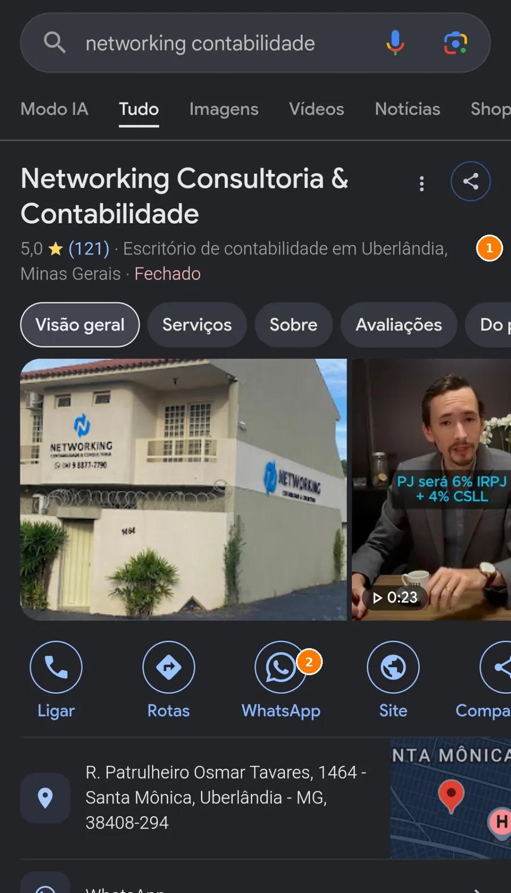
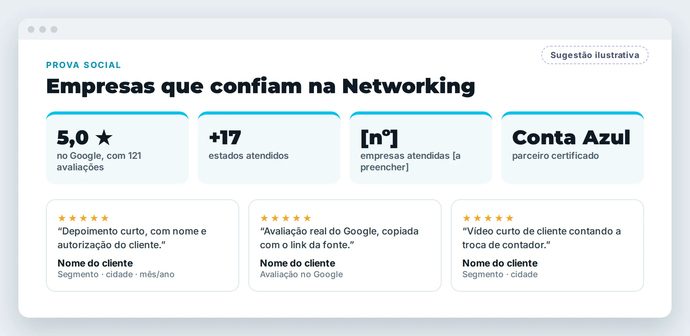

Leitura pública inicial
Olhamos, só por fora, o que a Networking Contabilidade mostra hoje ao mercado: Instagram, link da bio, Google e site. Esta leitura mostra onde está o potencial e em que ordem aproveitá-lo.
Usamos o caminho do Método VOS: Ver com clareza, Ordenar o que existe e Sustentar com constância. Este é o recorte da Networking.
A bio lista áreas ("Contador | Financeiro | Tributário") e cita 17 estados. O Google e o site falam de Uberlândia. Dá para dizer com mais clareza para quem a Networking trabalha.
Os carrosséis têm padrão visual e os Reels não. O link da bio reúne ao menos 8 destinos, sem um principal.
Nota 5,0 com 121 avaliações no Google, destaque "Depoimentos" e parceria certificada Conta Azul. No site, a seção de clientes ainda não mostra depoimentos.
Constância, conhecimento técnico e prova já existem. Hoje, eles levam a caminhos diferentes. Vocês não fizeram nada errado: fizeram na ordem errada. O ajuste é de sequência, não de esforço.
Leitura qualitativa, baseada apenas no que é público. O Raio-X completo mede isso com dados internos e entrevista.
Antes de mudar qualquer coisa, vale proteger o que já gera confiança.
121 avaliações na ficha da empresa, com botões de ligar, rota, WhatsApp e site.
Listado no diretório da Conta Azul. O site também exibe o registro no CRC no rodapé.
Reforma tributária, Simples, IR e MEI, com "Dados da Receita Federal" citados em carrosséis.
991 publicações no perfil. Poucos negócios constroem esse hábito.
Cartões com azul-ciano, selo de tema e rodapé padronizado: a base visual da marca já existe.
Igor e uma apresentadora nos vídeos, canal no YouTube e uma ferramenta de precificação para dentistas.
À esquerda, o print real. À direita, uma sugestão ilustrativa na própria identidade da Networking. É um exemplo de direção, não a arte final.
O perfil é a vitrine. Hoje ele diz o que a Networking é, mas não diz para quem nem de onde.


Quem se interessa pelo conteúdo cai em uma lista de destinos para públicos diferentes, todos com o mesmo peso.


Nos carrosséis, a marca é reconhecida de longe. Nos Reels, cada capa tem roupa, fundo e estilo de legenda diferentes. A grade fica forte no conteúdo e solta na identidade.


Os carrosséis trazem dados e prazos reais. O botão final pede para o leitor continuar deslizando, e não para conversar.

Nota 5,0 com 121 avaliações é um sinal raro de confiança. No site, a seção "Nossos Clientes Recomendam" só tem um link para avaliar.


O site lista dentistas, salões, engenheiros e arquitetos, profissionais de saúde, e-commerce, bares e restaurantes. No feed, os conteúdos são gerais, com poucas exceções (como o Reel "Consultório irregular").
Reel ou carrossel feito para um segmento, como "Consultório irregular".
Já existeFerramenta de precificação para dentistas, hoje escondida no meio do link da bio.
Já existeConvite único para falar com um especialista, com a prova do Google ao lado.
A ligarConsultamos site, Google e diretórios públicos. Registramos também o que não encontramos, porque ausência de prova também é informação.
| Item | O que encontramos | Fonte | Leitura |
|---|---|---|---|
| Site oficial | No ar, com título "Escritório de Contabilidade em Uberlândia". Soluções (BPO contábil, regularização fiscal, consultoria, abertura de empresas, troca de contador, imposto de renda, mentoria), segmentos, 9 perguntas frequentes, 3 posts de blog e formulário. Registro no CRC no rodapé. | networkingcontabilidade.com | Ativo |
| Ficha com 5,0 e 121 avaliações, endereço em Uberlândia/MG, botões de ligar, rota, WhatsApp e site. | Print do Google (14/10/2026) | Ativo | |
| Depoimentos no site | A seção "Nossos Clientes Recomendam" não traz depoimentos em texto, apenas um link para avaliar no Google. | Site | Fortalecer |
| Números do site | A faixa de números (empresas, estados, economia em impostos) aparece como "+ 0" e "+ milhões" na leitura automática. Pode ser contador animado; conferir no navegador. | Site | Conferir |
| Conta Azul | Listada como "Parceiro certificado Conta Azul", com serviços de planejamento tributário, consultoria empresarial e contabilidade gerencial. O nível de parceria não é informado. | Diretório Conta Azul | Ativo |
| Redes e canais | Instagram (991 posts, 2.995 seguidores), Facebook, canal "TV Networking" no YouTube e perfil pessoal @igorlucroja nos cabeçalhos de carrosséis. Contatos do site: (34) 98877-7790 e (34) 3046-0193. | Instagram, site | Unificar |
| Dados da empresa | O rodapé traz CRC, endereço e horário, mas razão social e CNPJ não aparecem de forma explícita. O nome varia ("Consultoria e Contabilidade" e "Contabilidade e Consultoria"). | Site | Revisar |
| Reclame Aqui e imprensa | Não localizamos página própria no Reclame Aqui nem matérias em veículos nas buscas feitas. | Buscas públicas | Não localizado |
No celular, deslize a tabela para o lado.
Anúncio amplifica o que já existe. Com estas três camadas no lugar, cada real investido encontra um caminho pronto.
Uma sequência simples, em que cada mês prepara o seguinte. O que a Networking já faz bem entra como base, e a conversão ganha o foco.
Esta leitura é um recorte do que o Raio-X mostra por dentro. Se fizer sentido, a gente conversa sobre o próximo passo, no seu tempo.
Conversar com a Yasmin Sem compromisso · resposta pelo WhatsApp